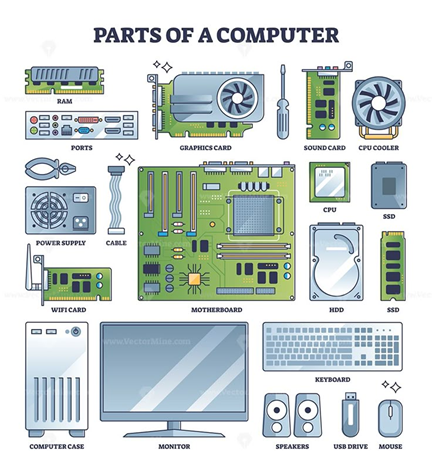
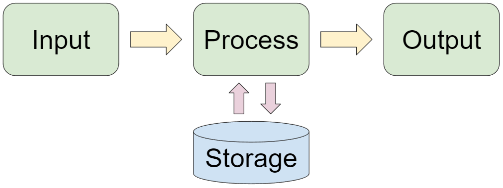

BÀI 1: BÊN TRONG MÁY TÍNH
🎯 Mục tiêu bài học
Sau khi học xong bài này, học sinh có thể:
• Nhận biết được các bộ phận chính bên trong máy tính.
• Trình bày được vai trò, chức năng cơ bản của từng bộ phận phần cứng.
• Mô tả được nguyên lý cơ bản của quá trình xử lý dữ liệu trong máy tính.
🧩 1. Cấu tạo các bộ phận chính bên trong máy tính
• Máy tính gồm phần cứng và phần mềm. Trong đó, phần cứng là các thiết bị vật lý có thể cầm nắm được.
• Các bộ phận chính bên trong máy tính gồm:
Bộ xử lý trung tâm (CPU)
• Là “bộ não” của máy tính, chịu trách nhiệm điều khiển và xử lý mọi thao tác.
• Gồm 2 phần chính:
– Bộ điều khiển (CU): điều phối hoạt động của các bộ phận.
– Bộ số học – logic (ALU): thực hiện các phép tính và so sánh logic.
Bộ nhớ trong (RAM, ROM)
• RAM: lưu trữ tạm thời dữ liệu và chương trình đang chạy.
• ROM: chứa các lệnh cố định, không bị mất khi tắt máy.
Thiết bị lưu trữ
• Dùng để lưu trữ dữ liệu lâu dài: ổ cứng (HDD), ổ thể rắn (SSD), USB, đĩa CD/DVD.
Thiết bị vào (Input devices)
• Dùng để nhập dữ liệu: bàn phím, chuột, máy quét, micro,…
Thiết bị ra (Output devices)
• Hiển thị hoặc xuất dữ liệu: màn hình, máy in, loa,…
Bo mạch chủ (Mainboard / Motherboard)
• Là bảng mạch kết nối tất cả các thiết bị trên lại với nhau.
• Chứa các khe cắm RAM, CPU, card đồ họa, v.v.

⚙️ 2. Vai trò và chức năng của từng bộ phận phần cứng
| Bộ phận | Chức năng chính |
|---|---|
| CPU | Xử lý dữ liệu và điều khiển toàn bộ hoạt động của máy tính. |
| RAM | Lưu trữ tạm thời dữ liệu và chương trình đang được thực hiện. |
| ROM | Lưu trữ cố định các lệnh khởi động máy; dữ liệu không mất khi tắt máy. |
| Ổ cứng (HDD/SSD) | Lưu trữ dữ liệu lâu dài, kể cả khi máy tắt. |
| Bo mạch chủ | Kết nối và truyền dữ liệu giữa các linh kiện, đảm bảo thông tin được trao đổi. |
| Thiết bị vào/ra | Giúp người dùng giao tiếp với máy tính: nhập dữ liệu và nhận kết quả. |
🔄 3. Nguyên lý cơ bản của quá trình xử lý dữ liệu trong máy tính
• Quá trình xử lý dữ liệu trong máy tính gồm 3 bước chính:
1. Nhập dữ liệu (Input): Dữ liệu được đưa vào thông qua các thiết bị nhập.
2. Xử lý dữ liệu (Processing): CPU nhận dữ liệu, xử lý theo chương trình đã định, sử dụng bộ nhớ RAM và ROM.
3. Xuất dữ liệu (Output): Kết quả được đưa ra các thiết bị xuất (màn hình, máy in, loa,…).
👉 Mô hình tổng quát: Dữ liệu vào → Xử lý → Kết quả ra
• Ví dụ: Khi nhập phép tính “5 + 3” → CPU xử lý → màn hình hiển thị kết quả “8”.

💡 Ghi nhớ
• Máy tính gồm phần cứng và phần mềm; phần cứng là thiết bị vật lý.
• CPU là bộ não của máy tính; RAM và ROM là bộ nhớ trong.
• Thiết bị vào/ra giúp giao tiếp giữa con người và máy tính.
• Quá trình xử lý dữ liệu luôn theo 3 bước: Nhập – Xử lý – Xuất.
📘 Nguồn tham khảo
• SGK Tin học 11 – Cánh Diều.
• SGK Tin học 11 – Kết Nối Tri Thức với Cuộc Sống.
• SGK Tin học 11 – Chân Trời Sáng Tạo.